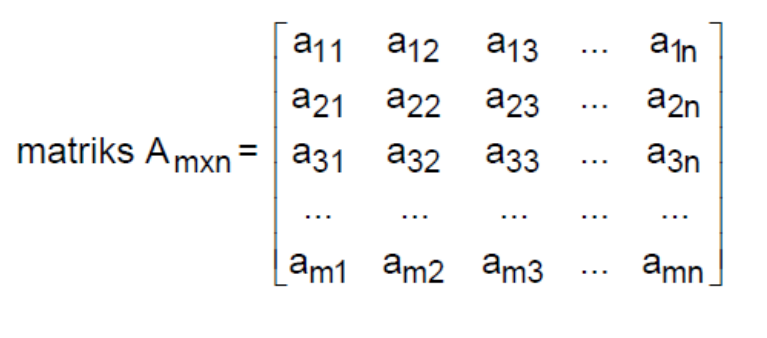

DEFINISI
Pengertian Matriks
Matriks merupakan suatu kumpulan bilang yang bisa disusun dengan baris
atau secara kolom atau bisa pula disusun oleh kedua-duanya serta
diapit dalam tanda kurung (). Bagian-bagian matriks terdiri dari
beberapa bilangan tertentu yang telah membentuk di dalam sebuah
matriks.
Matris sendiri pada umumnya banyak digunakan sebagai
penyederhana dalam penyampaian data. Matriks memiliki m baris dan n
kolom disebut matriks m x n matriks yang memiliki orde m x n.
Banyaknya baris dan kolom suatu matriks menentukan ukuran dari matriks
tersebut, disebut ordo matriks.

a ij disebut elemen A yang terletak pada baris i dan kolom j.
Elemen matriks A tersebut berindeks rangkap, contoh: a23 menyatakan
elemen matriks A pada baris ke 2 dan kolom ke 3. matriks A berordo m x
n ditulis Amxn.
Pengertian Invers Matriks
invers suatu matriks umumnya akan digambarkan dengan nama matriks yang
tertentu (dalam bentuk huruf kapital) dan dipangkatkan -1. Untuk lebih
jelasnya kami akan memberikan sebuah contoh yang dimana matriksnya
adalah matriks A, maka invers dari matriks A tersebut harus ditulis
dengan A-1 .
Sementara itu invers matriks dapat didefinisikan dimana jika A
merupakan sebuah matriks kuadrat, maka Anda dapat mencari matriks B
dengan cara AB = BA – 1. A dikatakan dapat dibalik atau invertible
sedangkan untuk B disebut sebagai invers dari A.
JENIS MATRIKS
1. Matriks bujursangkar/persegi
Matriks berordo n x n atau banyaknya baris = kolom disebut juga matriks berordo n.
2. Matriks baris
Matriks berordo 1 x n atau hanya memiliki satu baris.
3. Matriks kolom
Matriks yang hanya memiliki satu kolom.
4. Matriks tegak
Matriks berordo m x n
dengan m > n.
5. Matriks datar
Matriks berordo m x ndengan m < n.
OPERASI MATRIKS
Operasi matriks dapat dilakukan hanya jika memenuhi syarat dan
ketentuannya. Operasi matriks sendiri meliputi :
Penjumlahan dan pengurangan dua matriks
perkalian matriks dengan bilangan skalar, perkalian dua matriks, dan
transpose matriks.
Penjumlahan dan Pengurangan Matriks
Syarat penjumlahan dan pengurangan matriks yaitu : jika terdapat dua matriks,
misal matriks A dan B, yang memiliki ordo sama, maka elemen-elemen
yang seletak dapat dijumlahkan atau dikurangkan. Jumlah matriks A dan
matriks B dapat dinyatakan dengan A+B, sedangkan selisih matriks A dan
matriks B dapat dinyatakan dengan A – B.
Perkalian Skalar pada Matriks
Pada operasi
perkalian skalar, sebuah matriks dikalikan dengan bilangan skalar.
Jika diketahui A merupakan suatu matriks dan K merupakan bilangan
real, maka hasil perkalian K dengan matriks A adalah matriks yang
diperoleh dengan mengalikan setiap elemen A dengan K.
Transpose Matriks
Transpose suatu matriks,
misal matriks A, yang dilambangkan dengan At adalah sebuah matriks
yang disusun dengan cara menukarkan baris matriks A menjadi kolom
matriks At dan kolom matriks A menjadi baris matriks At.
Invers Matriks
Invers matriks adalah
kebalikan (invers) dari sebuah matriks yang apabila matriks tersebut
dikalikan dengan inversnya, akan menjadi matriks identitas. Invers
matriks dilambangkan dengan A-1. Suatu matriks dikatakan memiliki
invers jika determinan dari matriks tersebut tidak sama dengan nol.
Untuk menentukan invers dari sebuah matriks, terdapat dua aturan
berdasarkan ordonya, yaitu ordo 2x2 dan ordo 3x3.
Penerapan Matriks
Matriks memiliki banyak sekali kegunaan. Salah satu kegunaan matriks
adalah dapat digunakan untuk menyelesaikan permasalahan yang berkaitan
dengan sistem persamaan. Dengan menggunakan matriks dalam penyelesaian
permasalahan tentu akan menjadikannya lebih mudah. Jika dibandingkan
dengan penggunaan metode eliminasi atau substitusi, penyelesaian
sistem persamaan menggunakan matriks akan lebih efisien dalam
penyelesaiannya. Setelah mempelajari tentang penerapan matriks,
selanjutnya akan dibahas mengenai perkalian matriks.